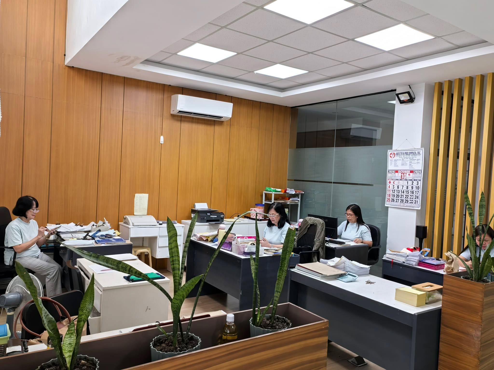
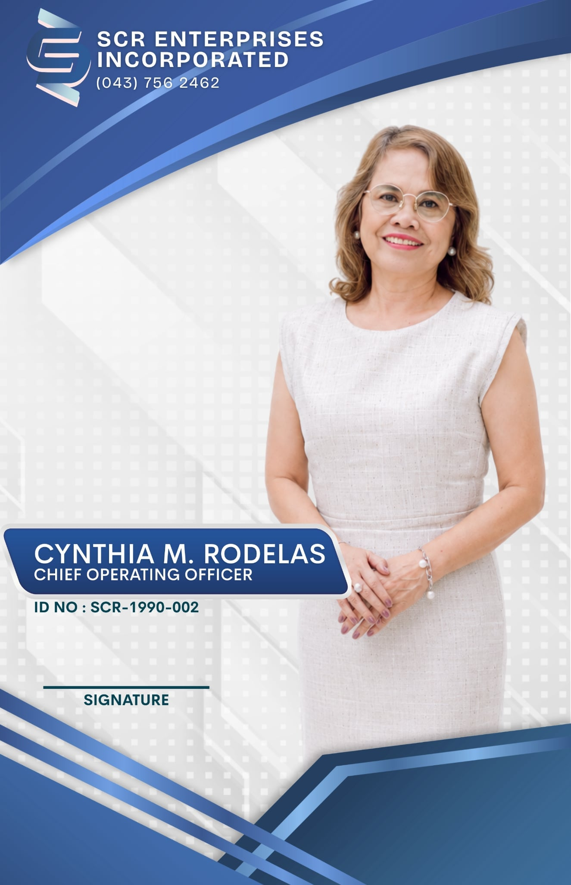

Feeding Growth. Sustaining Agriculture.
Feeding Growth. Sustaining Agriculture.

SCR Enterprises, Inc. is a dynamic and reliable wholesaling company based in Lipa City, specializing in the distribution of feed ingredients, edible oils, and agricultural products. Established in the early 1990s, the company has consistently served the growing needs of the agriculture and food industries by providing high-quality, competitively priced raw materials to agricultural enterprises, feed mills, and food processors and industries.
With operations built on the principles of integrity, sustainability, and customer satisfaction, SCR Enterprises, Inc. strives to build long-term partnerships through dependable service, transparent transactions, and responsive support. Its core product offerings include bulk feed ingredients such as corn, wheat, and rice bran; refined and crude edible oils like coconut oil and palm oil; and various agricultural commodities essential for food and livestock production.
Rooted in its core values, the company aims to strengthen the agricultural value chain while contributing to food security and rural economic development. As it continues to grow, SCR Enterprises, Inc. remains committed to supporting farmers, businesses, and communities through reliable and responsible sourcing.
To be a leading and responsible agricultural wholesaler that empowers rural economies, strengthens the food and feed value chain, and promotes sustainable development in agriculture and food industries.
To provide high-quality sustainable feed ingredients, edible oils and agricultural products through reliable supply chains, ethical sourcing and customer-focused service, creating value and driving growth for our partners and communities.
SCR Enterprises, Inc. was founded and is led by the Rodelas family, whose vision and dedication have driven the company's growth since its establishment in the early 1990s. Their combined leadership in operations and corporate management has built SCR into a trusted name in agricultural wholesale distribution across CALABARZON and beyond.

SCR Enterprises, Inc. specializes in the wholesale distribution of:
We cater to feed manufacturers, integrators, livestock farms, agri-processors, and other industrial buyers who rely on consistent quality and supply reliability.
We supply clients throughout the CALABARZON area and parts of the Bicol Region, and we maintain close relationships with both domestic suppliers and partners to ensure availability and price competitiveness.
As part of our corporate social responsibilities, we actively support rural economic development by: